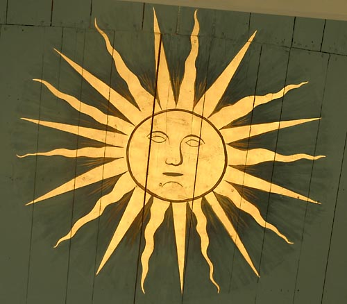
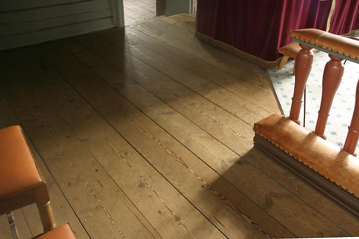

Vestre Moland kirke
Foto: Torvald Slettebø, Universitetet i Agder, Seniorsenteret (2005)
Tekster: Randi Stensby og Bjarne Karsten Nenseter
Vestre Moland vakre kirke har en historie som går langt tilbake. I tidlig kristen tid ble her bygd en langkirke i stein. (Ca 1150 i følge Norsk kirkeleksikon). De metertykke murene er fortsatt en del av kirkeskipet. I året 1347 blir kirken nevnt i offentlige dokumenter.
Etter hvert blir middelalderkirken utvidet, først med et lite korparti. Vi vet ikke når kirken fikk tårn. Det første var i bindingsverk. Regnskapene for årene 1666/67/68 viser at tårnet var påkostet for 13 Rdl. og 2 ort. Tårnfoten, oftest kalt våpenhuset, var i rundtømmer. Sakristiet var påbegynt i 1742. I 1797 ble kirken utvidet med sideskip til korskirke, slik vi ser den i dag. "Kirken ved veien" er den blitt kalt, og den lå lagelig til ved allfarveien. Vestlandske hovedvei gikk her forbi.
Ved kirkemuren ligger dette enestående fornminne. Steinen med uthogd kors er i følge tradisjonen en gravstein over den siste katolske og første lutherske prest i Vestre Moland, Glacius Søfrensen. Men nyere forskning viser at det er et kistelokk, og eldre enn reformasjonen.

Glacius Søfrensen var ikke den eneste som fortsatte i prestetjeneste. Det var en vanskelig overgangstid, og mangel på lutherske prester. Reformasjonen var blitt innført ved kongelig lov, ikke gjennom en kirkelig modningsprosess. Prestene ble av kongen anmodet om å fortsette i tjeneste, men de måtte nå følge den lutherske kirkeordinans.
Reformasjonen førte også med seg at kongen så på kirkene og kirkegodset som sin eiendom. For å rette opp statens finanser etter Den store nordiske krig, ble norske kirker solgt. Biskopen i Kristiansand kjøpte i 1723 Vestre Moland kirke for 180 riksdaler.
Året 1725 kjøpte 10 mann fra Vestre Moland kirken av biskopen på egne og allmuens vegne. Dokumentet er signert med segl og bumerke, en har skrevet sitt navn. Noe av kirkegodset fulgte med i salget, og kjøperne skulle holde kirken i god stand. De inntekter kirken hadde, tilfalt kjøperne mot å utrede de årlige utgifter.
Kirken ble i 1797 utvidet til korskirke. Kirken var ved kjøpet i "brøstfældig stand". Folketallet økte på 1700-tallet, og etter hvert ble plassmangelen prekær. Etter må ha søkt om og fått kongens tillatelse, ble kirken i 1797 utvidet til korskirke. Sideskipene ble bygd i tre. Oppgangssaga gjorde det enklere å bygge i tre. Det gamle hovedskip ble bevart.
Det var vanskelig økonomiske tider. I 1796 gav Kongen tillatelse til å hugge tømmer i skog som tidligere hadde tilhørt kirken. Tømmerstokkene ble hogget og transporter av lokale bønder. Noen av kirke local peasant famers. Noen av lokalbefolkningen gav også penger til byggning av kirka og noen ble satt til å hjelpe til i byggningsarbeidet
I overdragelsesdokumentet ved kirkekjøpet signert Christiansands Bispegaard 10. april 1725 heter det: Om kirken skulle bli ødelagt av torden, ildebrann eller oversvømmelse, skulle eieren nyte to daler av hver hovedkirke og en daler av hver annekskirke i stiftet, til kirkens gjenoppbyggelse.
Fra kirkens annaler 1768: "Da taarnet er lidet og lavt, har Sognepræsten med flere godvillige besluttet at bekoste det forhøyet". Og tårnet ble bygd i sin nåværende form. På toppen av spiret står en metallfløy med bokstaver og årstall gjennomskåret på vingen: "VM 1769".
"De Tvende Klocker i Taarnet" er nevnt i inventarliste fra 1663.Den minste klokken er eldre. Den har kalt til Messe fra tidlig kristen tid. Siden kirken den gang ikke hadde klokketårn, sto den i en klokkestøpul. En tror en har funnet fundamentet til denne støpulen på nordsiden av kirken.
Kirkens eksteriør har fått helt uvanlig vakre proporsjoner, med tårnet i stil med resten av bygget.
Inngang gjennom våpenhuset. Kirken og kirkebakken var et viktig samlingspunkt. Hit kom barn og voksne. Her møttes ungdom fra fjern og nær, herfra ble nyheter så vel som kirkelige forordninger spredd og diskutert. Kanskje var her også litt markedsvirksomhet med salg og bytte av varer.
I våpenhuset med de kraftige tømmerstokker og håndtelgede bjelker, henger montere med klenodier. Noen er fra kirkens katolske tid. I sin tid har rommet også tjent som vedskjul. I dag er det et rommelig og tjenlig inngangsparti.
Rundtømmerstokkene er nummerert. Det viser at de en gang har vært tatt ned. Tømmer ble nummerert enten bygningen skulle rives eller settes opp igjen på en annen tomt.

Monter med gamle og nyere skrifter.
Bibler som har ligget på alteret tidligere, er nå bevart bak glass.
Kirkens eldste hellige kar.
Gammelt nadverdutstyr.
Gammel bevart lås og nøkkel til kirken.
Oljekannen er et fornminne som illustrerer for oss som bare kan trykke på påk napper, en tid der kirken hadde parafinlamper som måtte fylles. Ved å sette en passende stokk inn i åpningen på siden, kunne kannen heves, og oljen helles fra tuten.
En kollektskål brukt på høytidsdager, til innsamling av de såkalte Tavlepenge.
Noe av det som ble samlet inn på tavlene, fikk læreren som tilskudd til lønnen. Skoleloven av 1739 krevde at elevene skulle lære å lese. Degnen - klokkeren - skulle holde skole. Bak teksten skimter vi en skisse som kan vise den gamle steinkirken etter at den hadde fått tilbygd korparti og et lite tårn.
Nærbilde av baksiden av kollekskålen. Etter møysommelig restaureringsarbeid har vi fått fram fortiden. Det enkle kirkebygget har et kors på hver ende av mønet , og kan være et bilde av den opprinnelige steinkirken fra 1100-tall.
Denne kisten med beslag står i våpenhuset.
Kirkebøssen fra 1845 er fortsatt i bruk, like ved utgangsdøra.
Vestre Moland kirke er en vakker kirke, harmonisk i proporsjoner og farger. Ved restaureringen i 1960-årene, under prost Sundtoft, fikk kirken nye benker forsynt med dører. Hovedfargen er gråblå, med innslag av rødt, og en mørkere blå kant oppe og nede. Byggmester Fjermeros påtok seg snekkerarbeidet.
Den bevarte tykke muren fra 1100-tallet. Det er en såkalt kistemur, med fine stein utvendig og innvendig, og grovere stein i midten. Opprinnelig hadde kirken ett eller to smale vinduer i muren. Sparsomt dagslys og alterlysene var eneste belysning. Messen, som var på latin, var ganske kort, og menigheten sto på jordgolvet.
Det kom nye tepper ved restaureringen i 1966. Gulvplankene ble renslipt for maling, og teppene harmonerer med fargesetningen. De 8 stolene er en gave fra en kirkering.
Taket ble malt så likt den opprinnelige blåfargen som mulig. Arbeidet med å legge på nye stjerner i ekte bladgull ble ledet av konservator Dahlin og utført av Erling Nilsen. Malermester Vesterhus hadde ansvaret for malerarbeidet.
Den store altertavlen fra 1630 er harmonisk og vakker. Rammeverket er inndelt i fire felter eller etasjer med bæresøyler. Det er i alt 8 marmorerte søyler. På sidevingene er utskjæringer som symboliserer troen, håpet og kjærligheten. Seks utskårne englehoder er dekorativt plassert.
Altertavlens rammeverk med vakre og dekorative utskjæringer er formgitt av mesteren for maleriene, Gottfried Hentzschel. Det har vært et tett samarbeid mellom maleren og den dyktige snekkeren og treskjæreren. Tavlen smalner oppover i en spiss på toppen. Øverst troner Christus Victor.
Den nederste delen av altertavlen har i midtpartiet innstiftelsen av nadverden. På venstre side hyrdenes tilbedelse, på høyre side Marias bebudelse. Tekstfeltene har i tidens stil skriftsteder i gullskrift på sort bunn, som forklarer innholdet i bildene. På de vannrette bærebjelker er det plassert i alt seks utskårne englehoder med vinger, på den nederste fire og på den øverste to.
Kunsthistoriker Henrik Grevenor (1896-1937), ekspert på Gottfried Hentzchels kunst, skriver begeistret om kunstnerens strøk og penselføring, og hans forkjærlignet for varme farger: "Han mestrer hver minste detalj ligesaavel som helheten med uforlignelig bravur."
Apostelen Johannes "lå mot Jesu bryst", og fremstilles her som et barn, som i det utskårne alterrelieffet reddet fra Kristiansand gamle og brente domkirke.
Hyrdenes tilbedelse, i tett og dramatisk komposisjon.

Dramatikken øker, fra korsfestelsesscenen, til den når høydepunktet i oppstandelsesscenen i bildet over. De to øverste utskårne figurer fremstiller Moses og antagelig Elias, mens de fire apostlene flankerer bildet av oppstandelsen.
Kirkebibelen på alteret er en "Amerikagave", fra familien Fedde, gitt i 1956. Familien bosatte seg i Amerika, men en av sønnene var døpt i Vestre Moland kirke. Han ønsket å gi en gave til kirken.
Detalj fra de frodige treskjæringene. Motiv og fargevalg bestemt av samme kunstneren som skapte altertavlens malerier.
Detaljer fra sidevingene.
Alteret med sølv lysestaker. I inventarlisten fra 1794 har prost Lassen skrevet: "Tilkommet et par nye store Lysestager, givet til Kirken i dette Aar." Prosten skriver ikke at han selv er giveren. Men hans sønn, som da var kappelan føyer dette til på listen i 1797.
Alterduken er sydd og gitt som gave av frøken Ansnes i 1951. Utslitte røde alterkleder er gjennom tidene byttet ut med nye røde.
På aller nederste tekstfelt har altertavlen fra 1630 fått følgende tilføyelse: "Gud til ære og Kirken til Prydelse, lod Sognepræsten doktor Søren Friedlieb denne Altertavle og Prædikestol på Kirkens bekostning reparere. - 1750 - ".
I feltet over står nadverdens innstiftelsesord: "Vaar Herre Jesus Christus i den Nat da hand bleff forraadt, tog hand Brødet."
Nåværende alterkalk er gitt av Hans Christopher Møglestue.
Årstallet 1797 er gravert på kalken. I løpet av 1700-taller vokste menigheten. Kirken ble utvidet, og det ble også behov for større alterkalk. Derfor denne gaven. Det gamle naverdsutstyret kan være tatt i bruk ved sognebud.
Kalk, disk, og oblateske til nadverden. På oblatesken i sølv står inngravert: "Vestre Molands Kirche aar 1730".
Døpefonten fra 1818, som var satt bort på loftet, ble tatt fram igjen ved den siste restaureringen av kirken på 1960-tallet. Det har gjennom årene vært flere døpefonter i kirken. De eldste har vært store og ofte i kleberstein. I tidlig kristen tid ble dåpsbarnet dukket helt under i vannet. Kanskje holdt denne skikken seg til 1300-tallet.
Det vakre dåpsfatet har inskripsjonen: "Givet til Vestre Molands Kirke af Herr Stener Stenersen og Mad. Severine A. Stenersen Aar 1818."
Denne kannen ble nok i katolsk tid brukt til vievann. I dag er den dåpskanne. I inventarlisten fra 1786, blir den beskrevet slik: "En Metall Vandkiedel", og i 1812 skrev man om dette klenodiet: "En vandkande av klokkemetall".
Næbilde av utsmykningen av den gamle vievann/dåpskannen.
De vakre eikestolene i koret er fra nyere tid. Utskjæringene er utført av Geirulf Stoveland Nasledalen.
Under restaureringen av altertavlen i 1965 oppdaget konservator Egil Dahlin signaturen GH. I et hjørne på et av de øverste bildene står: "Anno 1630. Pinxit Gottfried Hentzschel". Dermed fikk man bekreftet at det var en kunstverk av Hentzschel.
Vestre Moland kirkes vakre og enestående alterparti med rammeverk og malerier, fra 1630, epitafiet til venstre fra 1638, altertavlen, og prekestolen 1660 med himmel, harmonerer så godt i stil og farger at det ligger nær å anta et de skriver seg fra samme mester.
Disse årene med så rik kirkeutsmykking i vårt land, kan vi vel kalle en gullalder.
Prekestolen med himmel fra 1660. Opprinnelig kan det ha vært en enklere prekestol. Prekestolen ble viktig etter reformasjonen. Luther la vekt på Ordet. Prekenen med utlegning av evangeliene, ble nå en del av gudstjenesten, som ble lenger i forhold til den tidligere gamle Messe. Det ble behov for kirkebenker. Folk kunne ikke stå så lenge.
Maleriene med de fire evangelister Mattæus, Markus, Lukas og Johannes.
I feltet med Den gode hyrde sto det opprinnelig et portrett av presten Friedlieb, men selv om han hadde sørget for restaureringen av kirken og var meget populær, ble han skiftet ut i året 1898.
De smale sorte feltene på øvre kant av prekestolen har en innskrift: "Til Guds Ære og denne Hellige Stedz Zirat hafver Just Jacobsen Wolf, Borger udi Christian (Christiania) ladet staffere denne Prædikestol Anno 1660."
Da kirken ble restaurert i 1965-66, lot prost Sundtoft det gamle timeglass komme tilbake på sin opprinnelige plass.
Timeglasset kom i bruk i kirkene etter en kongelig forordning der det het at presten ikke måtte "tøve" lenger på stolen enn en time, uttrykt i den tids språk. Fra prekestolen har prestene belært, formant, refset og trøstet. I nøds- og krigsårene da "Engelske Krydsere stængte hver havn", holdt prost Lassen en følelsfyldt preken: "I som kan leve i overflod, må skamme Eder over hver lekkerbit I tar i Eders mund."
En frodig dekorert himmel over prekestolen. Inne i midten en utskåret fugl, symbol for Den Hellige Ånd.
På baldakinen over talerstolen står bokstavene S.D.G.: Soli Deo Gloria. (Alene Gud æren). Teksten rundt himlingen: "TIL GUDS ÆRE og denne Hellige Steds Beprydelse Hafver Børe Trulsen og hans Hustru Annette Lauritsdat. bekaastet og foræret denne Himmel 1660". Hun er mor til Just Jacobsen som gav preketolen.
Prestetavlen fra 1750 er bekostet av sogneprest Friedlieb, og er i samme stil som prekestolen og altertavlen. Øverst på listen over prester fra reformasjonen av, står Blasius Søfrensen. Han var den siste katolske og ble også den første prest etter reformasjonen.
Senere er nye prestetavler kommet til, på nordre vegg i koret.
Til venstre på nordre vegg ser vi utskjæringene på rammen omkring epitafiet. Det latinske ordet Epitaphium betyr gravminne over navngitte personer. Dette er for herr Anders Mule, sokneprest fra 1621 til 1660, og hans familie. Minnetavlen ble utformet da datteren Margrethe døde.
Med sin vakre dekor og utskjæringer, er epitafiet i stil med altertavlen og kulturhistorisk meget verdifullt. Under bildene står teksten: "Her ligger begraffen Salig Mand Herr Anders Mule, fordum Sognepræst till Vestre Molands Præstegjeld, med sin kiære Hustru Hielradt Friijs og deres Børn. Gud Giffve dennem, med alle Guds udvalgde paa den Ydderste Daag tilsammen Ehn hederlig och gladelig Opstandelse. Amen. Den 1. Nov. 1638."
Øverste del av bildet viser oppvekkelsen av Lasarus. I forgrunnen på det nederste bildet ser vi den lille båren med minstebarnet, den toårige Margrethe. Omkring står foreldrene Anders Mule og fru Hielradt og to av deres barn. I følge tradisjonen er graven under kirkegulvet nedenfor epitafiet.
Jacob Friedrichsen var sogneprest fra 1829 til 1862. Han var begavet, energisk og dyktig. Han var fast formann i skole- og fattigkommisjonene, han fikk i gang Missionslag, og organiserte Maadeholds- og Afholdenhedsselskab. Sogneselskaber var et første forsøk på organisering til fremme av jordbruk og fiske. Prestegården var et mønsterbruk.
Hans Jacob Grøgaard var sogneprest fra 1811 til 1823. Han motarbeidet allslags overtro. I tillegg til å forbedre skoleverket, påførte ha sognet en ekstra utgift ved å skaffe en "eksamineret og dugelig Jordmor". Han har utgitt atskillige prekener, og er landskjent for sin ABC fra 1815, og særlig for lesebok fra 1816, kalt Grøgaardsboka. Han møtte på Eidsvoll i 1814.
Kirken har en del presteportretter. Andreas Jørgensen Biørn ble sogneprest i 1760. Han arbeidet videre med å oppfylle lovens krav til skolen. Alle barn skulle lære å lese. Han hadde "Almuens Vel" i tankene. Gabriel Scotts skriver i romanen Jernbyrden: "Presten Biørn skal ha den rosen at han inderst inde var god og varm , om han end utvortes opptraadte myndig og streng, hvad som før øvrig nok trængtes paa den tiden."
Karl Matias Kobro, sogneprest 1879 til 1916. Han var en dyktig administrator, og sto for nødvendige utbedringer av kirken. Den fikk nye benker, og nytt orgel.
Også orgler har sin historie. I 1854 tilsatte kirken organist med medfølgende orgel: Seminarist fra Holt Gunder Aadnesen var lærer ved Lillesand almueskole og organist ved Vestre Moland kirke. Fra prost Jacob Friedrichsen annaler: "Hans Ansettelse har tillige givet Anledning til at Kirken har faaet et Orgel, hvilket han er eier af, og solgte til Kirken for 300 Spdlr."
Det viste seg ved restaureringen at tavlefeltene på orgelgalleriet ikke hadde dekor. Man valgte da å gi dem en moderne dekorativ utforming, heller enn å kopiere den gamle dekoren fra de andre galleriene.
Orgelmusikk og salmesang gir gudstjenesten et religiøst og også kulturelt innhold.

Tavlen med salmenummer ble restaurert i 1898.
En strålende sol over koret.Etter avlutning i 1965, kom solen og også den blågrå himmel med skyer og gullstjerner fram.
Om den omfattende restaureringen i 1965-66 under prost Sundtoft, skriver prosten blant annet: "Svingtrappene til galleriene ble skiftet ut med nye repostrapper, som samtidig ble forsynt med rekkverk og smakfulle balustre."
Andreas Biørn, sogneprest fra 1760 til 1773, fikk bygd gallerier eller "Træv" for å avhjelpe plassmangelen. Benkene på dette galleriet er gamle. De er nå malt med samme blåfarge som taket i kirken, slik den kom fram ved den siste restaureringen.
Det var en krevende jobb å avdekke dekoren på tavlefeltene på sidegalleriene.
Kirken har fire lysekroner. De er fra kirken fikk elektrisk lys i 1928. Dette ble markert med en lysfest i kirken. De to største lysekronene er gave fra Isak Tellefsen og Severin Sangereid. Det ble ny lysfest i 1966, da kirke- og lysanlegg ble restaurert.
Det var stor forskjell på en plass i en kirkebenk og på ett av galleriene. Det var gjerne størrelsen på gården som bestemte hvor folk kunne sette seg. Salg av kirkestol var en av kirkens inntekter.
Inventarlister viser at kirken har har hatt et skip som er eldre enn det som henger nå, men det er gammelt dette og. Da det ble restaurert i 1966, fant man en papirlapp: "Jens Christensen Lassen me fecit. Vestre Moland Præstegaard 1784." Jens Chr. Lassen, tidligere sjømann og brorsønn til sokneprest Lassen, har bygd den flotte tremasteren.
De solide gulvplankene i koret og inn i sakristiet, er fra siste halvdel av 1700-tallet, da kirken fikk tilbygd sakristi. Til da sto skriftestolen inne i kirken.
Fra alterpartiet fører en dør, som her står åpen, inn til sakristiet. På begge sider av sakristi-døren, er gjengitt skriftsteder. De viser sakristiet som rom for skrifte. : "Gud vær mig Synder naadig". "Vær frimodig, dine Synder ere dig forladne." "Naar Dend Ugudelige omvender sig fra alle sine Synder som Hand hafver giort og holder mine Skikke og giør Ræt og Rætferdighed, da skal Hand visselig leve, Hand skal icke Døe."
Sakristiet er vakkert utsmykket. Englene forkynner: "Hellig, hellig er Den Herre Zebaoth". Veggmaleriene er restaurert og har fått tilbake sin opprinnelige farge.
"Jesus Nazareus Rex Judaorum".
Ved foten av korset er gjengitt to vers fra Bibelen: "Det være langt fra mig at jeg skal roose mig uden af Vaar Herre Christi Kors". "Jeg akter det mig ikke at viide noget iblant eder uden Jesum Christum og ham korsfestet."

"Anno MDCCL (1750) Haver Ærlige og Velagte Mand, Niels Andersøn Møglestue med sin Kiære Hustrue Rennield Olsdatter Dannevig ladet Dette Cacristiet til Guds Ære på deres egen Bekostning med ald denne saa prydelig Malning staffere"
Kilder:
Den viktigste kilden: Prost D. S. Sundtoft, Vestre Moland kirke. Trekk fra dens historie gjennom 800 år. Arendal 1983.
Skolebestyrer Chr. Hanssen: Lillesand: Sparebanken og byen gjennom 100 år, 1852 - 1952.
Vestre Moland Kirke - På Kirkevandring i Aust-Agder
Vestre Moland prestegjeld utgjør hele den sydvestre del av Aust-Agder fylke. Det har en lang kyststrekning som med sine fjorder, øyer og holmer hører til de vakreste partier i Sørlandets skjærgård. Gravrøyser og oldtidsfunn forteller om tidlig bosetning. Vestre Moland kirke har en lang historie. Am. Helland nevner at den må være oppført før 1347, og prof. Dietrichson anslår byggetiden til slutten av 12. årh. Alle undersøkelser tyder på at den må være bygd i siste halvdel av 1100-tallet. «Modgulanda» kirke var navnet. Opprinnelig har det vært en enskibet langkirke i sten. Senere har den fått kor og tårn. Dette er bekreftet av en tegning på en gammel kollektskål som er restaurert hos Riksantikvaren. Det er prost Sundtoft som forteller dette i sin grundige og interessante bok om Vestre Moland kirke gjennom 800 år. Det viste seg, da en fikk avdekket ytterste malerlag på offerskålen, kom det frem et bilde av en rektangulær kirke uten tårn og kor, bare et kors på hvert møne. Den andre siden av ryggstykket på offerskålen viser en kirke med tilbygget korparti i østre gavl og en takrytter på vestre, kanskje tårnet på det første våpenhus?
Kirken ble etter hvert for liten og i 1797 ble den som flere andre stenkirker langs kysten, bygget om til korskirke. Mot slutten av 1797 heter det i innberetningen om kirken: «I dette Aar er den repareret og utviidet med 3de Kors Bygninger af Træe til den gamle Muur som et Kors, i god stand med hvelvet Loft, Gulv og Stoler i det Nye, samt nyt ophøjet Gulv og Stoler i den gamle og hvad meere skal til Foraaret istandsættes». Almuen - både gårdbrukere og husmenn - deltok med penger eller dugnad. Det ble utført et svært godt arbeid med sikker sans for stil og proporsjoner.
Kirken har blant inventaret en rekke ting som har stor kulturhistorisk interesse. Vi nevner et stort epitafium over presten Muhle fra 1638. Særlig må fremheves den praktfulle altertavlen fra 1630 med 3 hovedfelt, sidefelter og marmorerte søyler. Den vakre rammen er i barokk. Bildene er malt av den tyskfødte Gottfried Hendtzschel. Han har også malt det nevnte epitafiet. Hovedfeltet på altertavlen forestiller nattverden. Det er flankert av to sidefelter med Marias bebudelse til høyre og hyrdenes tilbedelse av barnet i krybben til venstre. I midtfeltet har vi korsfestelsen, og over dette oppstandelsen. I det øverste felt, en trekant, har vi pinseunderet. Tavlen har vakkert dekorerte vinger og fotstykke, og utskårne figurer på sidene med den seirende Kristus på toppen. Nevnes må også den vakre prekestol fra 1660 med baldakin. I fire av feltene er malt de 4 evangelister. Under baldakinen henger duen som symbol på Ånden. Prekestolen har også timeglass. Av altersølv nevnes brødeske fra 1730, to lysestakerfra 1794 og kalk og disk fra 1797. En massiv vannkanne er muligens fra middelalderen. «Kirkeskipet» er fra 1786 og er nyrigget og restaurert. Det gamle, fargerike interiør forsvant ved den såkalte «restaurering» i 1890-årene. Kirken ble da panelt og malt og fikk nye benker, nytt orgel og nytt tårn og spir.
Interessen for restaurering vokste frem i 1920-årene. I 1953 ble prekestolen og altertavlens rammeverk restaurert. En begynte å avsette penger til restaurering, og i 1964 ble det nedsatt en komité med prost Sundtoft som formann. Restaureringsarbeidet kom etter hvert i gang. Konsulent Odd Helland og konservator Egil Dahl in foretok undersøkelser. Malermester Vesterhus sto for malerarbeidet og byggmester Fjermeros for snekkerarbeidet. Interiøret ble ført tilbake til slik det var etter ombyggingen til korskirke i 1797, med profilering, rekkverk med ballustre, benker i gammel stil mm. Det møysommelige fargerestaureringsarbeidet ble utført av konservator Dahlin med verdifull assistanse av fru Stormoen og Arne Corneliussen.
Den eldste kirkeklokken har ringt helg og høgtid over bygda i 800 år. Den yngste er fra 1600-tallet og ble omstøpt i 1766. Annen søndag i advent 1966 kalte de folket sammen til høytidsgudstjeneste ved biskop dr. theol. Kaare Støylen. Det ble en stor dag for hele menigheten. I 1978 ble sakristiet restaurert under ledelse av magister Sigrid E. Nilsen. Innredning av skriftestol og bilder og bibelord som en fikk fram, viser at rommet har vært brukt til skrifte. Vestre Moland Kirke føyer seg fint inn i rekken av betydelige middelalderkirker som nå presenterer seg i historiens drakt i restaurert stand. I omlag 800 år har denne praktfulle kirke vært samlingsstedet for menigheten i sorg og glede.
Teksten er hentet fra Bjarne Karsten Nenseters bok ”På Kirkevandring i Aust-Agder”, som han utga i 1993, på grunnlag av sine artikler i Agderposten i 1950-årene, da han var prest i Aust-Agder. Vi gjengir her teksten med tillatelse fra Nenseters arvinger.